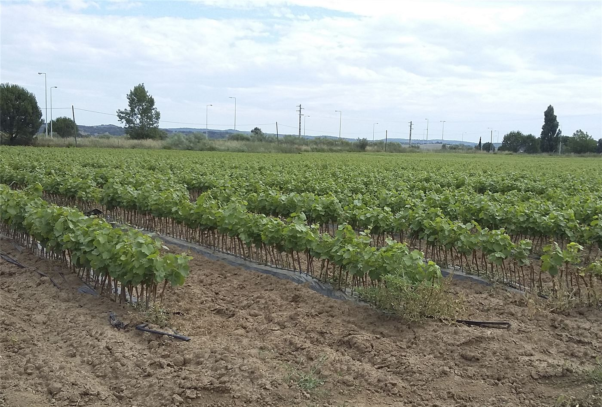

Viveiros Plansel · Montemor-o-Novo · Alentejo
Reben für einen erfolgreichen Weinberg.
Veredelte Pfropfreben aus den besten portugiesischen Rebsorten. Zertifiziert und gezogen in unserer eigenen Rebschule im Alentejo.
Viveiros Plansel gehört zur Plansel Group: Weine, Events und Wissen

- 1975Erste Rebflächen in Montemor-o-Novo
- ~50 %der zertifizierten Reben Portugals aus Plansel-Klonen*
- 50+Jahre Klonselektion portugiesischer Sorten
- 12Rebsorten im Programm, dazu Unterlagen und Tafeltrauben
- 100 %zertifiziertes Pflanzgut
* Firmenangabe Plansel, zitiert bei Vinetur, 9. Nov. 2026
 Viveiros01
Viveiros01
Was wir anbieten
Von der Rebe bis zum Olivenbaum.
Lernen Sie die Viveiros Plansel kennen und alles, was wir für Weinbauern und Olivenbauern anbieten.

01RebschuleVeredelte Pfropfreben, gezogen aus den besten portugiesischen Rebsorten. 02Rebsorten & UnterlagenDie Geschichte der Sorten und Unterlagen, die wir vermehren.
02Rebsorten & UnterlagenDie Geschichte der Sorten und Unterlagen, die wir vermehren. 03OlivenbäumeUnsere Olivensorten und ihre technische und wissenschaftliche Entwicklung.
03OlivenbäumeUnsere Olivensorten und ihre technische und wissenschaftliche Entwicklung. 04Leistungen & ProdukteDienstleistungen und Produkte für Weinberg und Olivenhain, auf Anfrage.
04Leistungen & ProdukteDienstleistungen und Produkte für Weinberg und Olivenhain, auf Anfrage.
 Wie alles begann02
Wie alles begann02
Wie alles begann
Eine Rebschule, die Portugal veränderte.
Nach dem Kauf der Quinta de S. Jorge in Montemor-o-Novo gründete Jorge Böhm, gebürtiger Deutscher mit großer Liebe zu Portugal, das Unternehmen Plansel.
Es wuchs mit der Rebschule, vor allem mit veredelten Pfropfreben, die in Portugal bis dahin praktisch unbekannt waren. Später kam die Vermehrung von Olivenbäumen aus halbverholzten Stecklingen hinzu.

 Produktion03
Produktion03
Der Weg einer Rebe
In acht Schritten vom Holz zur Pflanzrebe.
Jedes Material bleibt vom Schnitt bis zum Versand nach Sorte, Klon und Zertifizierungskategorie gekennzeichnet.
- 01Unterlagen schneiden
Die Unterlagen werden im Feld geschnitten, nach Kaliber sortiert, maschinell entknospt, zu Bündeln von 200 Ruten gebunden und desinfiziert.
- 02Edelreiser ernten
Das Holz der Edelsorten wird im Feld geschnitten, gebündelt, etikettiert und nach Klon und Zertifizierungskategorie getrennt.
- 03Kühl lagern
In der Kühlkammer bei kontrollierter Feuchte und Temperatur.
- 04Veredeln
Fachkräfte veredeln am Tisch, die Maschine setzt den Omega-Schnitt.
- 05Stratifizieren
In Torfkisten wachsen Unterlage und Edelreis in einer warmen, feuchten Kammer zusammen.
- 06Rebschule im Feld
Bis Herbst oder Winter wachsen die Reben im Feld. Plansel und die amtlichen Stellen prüfen Sorte und Gesundheit.
- 07Auslesen und wachsen
Jede Rebe wird nach den gesetzlichen Vorgaben geprüft, die Wurzeln gekürzt, die Rebe gewachst, gezählt und klimatisiert gelagert.
- 08Versand und Pflanzung
Im Karton mit Folie gegen Austrocknung. Vor dem Pflanzen werden die Wurzeln gekürzt, gepflanzt wird von Hand oder mit der Maschine.
Zertifizierung
Alles Pflanzgut ist zertifiziert.
Verkauft wird in der Kategorie „zertifiziert“, erkennbar am blauen Etikett. Material aus unseren Mutterpflanzenfeldern geht an die eigene Rebschule, an Weinbauern und an andere Rebschulen.
 Rebsorten04
Rebsorten04
Viticultura
Die Sorten, die wir vermehren.
Portugiesische Rebsorten aus der Klonselektion von Plansel.
- Touriga NacionalRote Sorte
 Touriga FrancaRote Sorte
Touriga FrancaRote Sorte TrincadeiraRote Sorte
TrincadeiraRote Sorte AragonezRote Sorte
AragonezRote Sorte Tinta BarrocaRote Sorte
Tinta BarrocaRote Sorte CastelãoRote Sorte
CastelãoRote Sorte ArintoWeiße Sorte
ArintoWeiße Sorte Antão VazWeiße Sorte
Antão VazWeiße Sorte LoureiroWeiße Sorte
LoureiroWeiße Sorte GouveioWeiße Sorte
GouveioWeiße Sorte ViosinhoWeiße Sorte
ViosinhoWeiße Sorte- Foto folgtAlvarinhoWeiße Sorte
Tafeltrauben, Unterlagen sowie Klone und Mengen nennen wir Ihnen gern auf Anfrage.
 Olivicultura05
Olivicultura05
Olivicultura
Auch Olivenbäume kommen aus unserer Rebschule.
Wir vermehren Olivensorten aus halbverholzten Stecklingen und begleiten ihre technische und wissenschaftliche Entwicklung.
 Kontakt06
Kontakt06
Reben bestellen
Haben Sie Fragen? Schreiben Sie uns.
Nennen Sie uns Rebsorten, Klone, Unterlagen und Mengen. Wir antworten mit Verfügbarkeit und Angebot.
- Adresse
- Viveiros Plansel, Quinta de São Jorge
Estrada Municipal 537, Porto das Lãs
7050-203 Montemor-o-Novo, Portugal - viveiros@plansel.com
- Telefon
- +351 266 899 260
Anruf ins portugiesische Festnetz - Folgen
- Instagram · Facebook